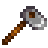
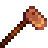
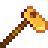
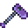

Hoes
The Hoe is a tool obtained at the beginning of the game. It is used primarily to till soil for Farming, and to dig up Artifact Spots.
The hoe may also be used to till sand in The Mines, on The Beach, or in The Desert, as well as other areas of Stardew Valley that have exposed soil. Tilling sand in the Mines may yield Artifacts, Cave Carrots, and other items. Above ground, tilling soil may yield Clay, metal ores, or Mixed Seeds. In Winter, many more areas can be tilled. These may additionally yield Snow Yams or Winter Roots.
The Hoe may be upgraded at the Blacksmith. The cost and resource requirements for each upgrade are shown in the table below. To till more than one tile at a time, hold left-click to "power-up" an upgraded Hoe, then release it to till an area. While charging an upgraded Hoe, the tool hit area can be adjusted by moving the character, who will continue to face in the same direction.
Grades of Hoe
| Image | Name | Cost | Ingredients | Improvements |
|---|---|---|---|---|
 |
Hoe | Starter Tool | N/A | |
 |
Copper Hoe | Increases maximum area of effect to 3 tiles in a straight line. | ||
| Steel Hoe | Increases maximum area of effect to 5 tiles in a straight line. | |||
 |
Gold Hoe | Increases maximum area of effect to a 3x3 area (9 corresponding tiles). | ||
 |
Iridium Hoe | Increases maximum area of effect to a 6x3 area (18 corresponding tiles). |
Energy Cost
- See Proficiency
Notes
Tilling a square that contains an object (like a Keg or a Scarecrow, with the exception of Sprinklers) will remove the object. This can be advantageous for removing large numbers of items like Kegs or Preserves Jars, but can be disadvantageous when attempting to till farmland. The Hoe will not remove objects from squares that contain crafted floors or paths, so placing objects (Scarecrows, etc.) on top of floors/paths will allow for tilling land without displacing them.
History
- 1.5: Hoes no longer remove sprinklers.
- 1.6: The player can now "strafe" while charging a watering can or hoe, allowing them to reposition their tool hit area without changing their facing direction.
| Tools | |
|---|---|
| Basic | Axes • Golden Scythe • Iridium Scythe • Hoes • Pans • Pickaxes • Scythe • Trash Cans • Watering Cans |
| Fishing | Training Rod • Bamboo Pole • Fiberglass Rod • Iridium Rod • Advanced Iridium Rod • Crab Pot |
| Other | Auto-Grabber • Auto-Petter • Hay Hopper • Heater • Incubator • Milk Pail • Ostrich Incubator • Shears |